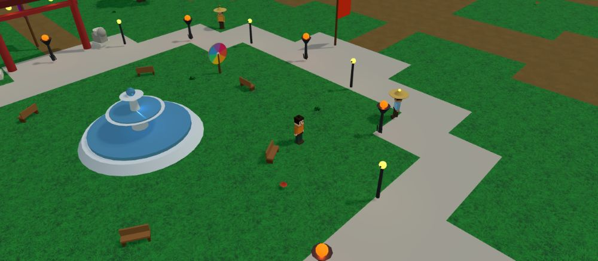
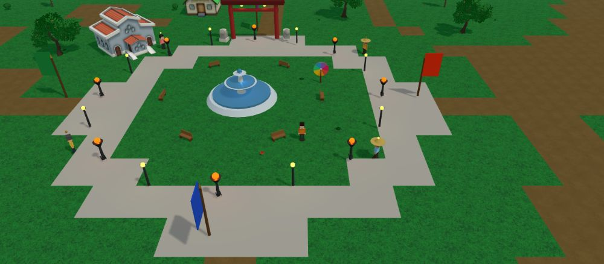
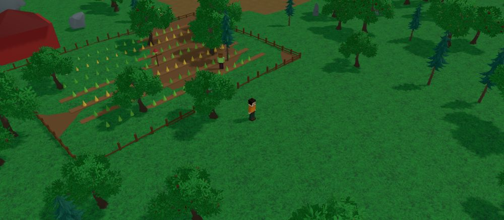
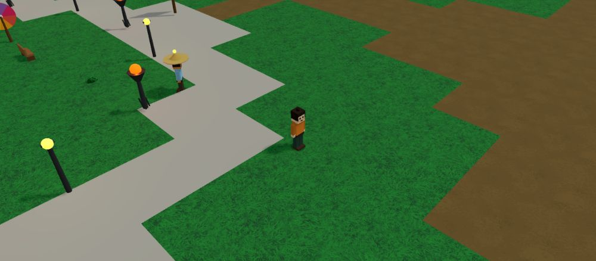
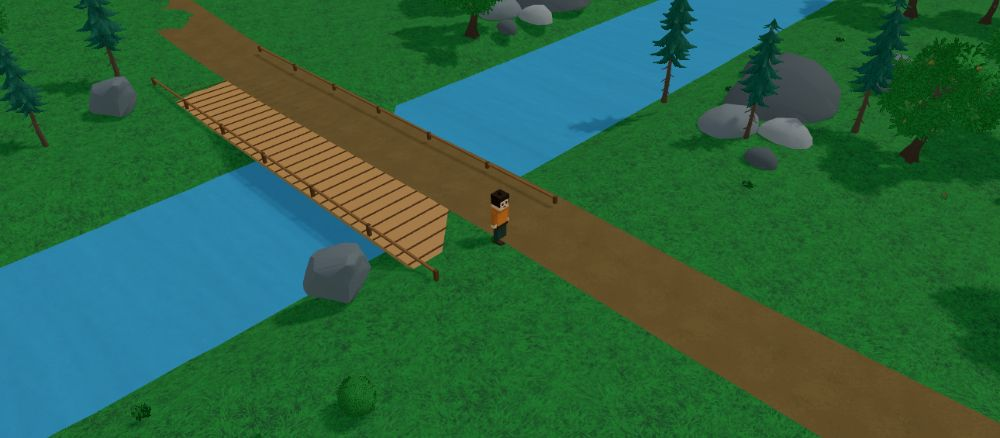
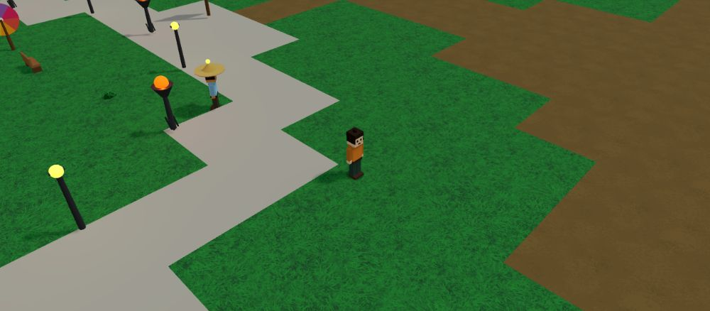

How to Play Daimyo
A quick path from connecting your wallet to claiming land, earning $DYMO, and ruling feudal Japan — written for players, not developers.
Start Here: Your First Minutes
Connect your wallet — you need at least 1,000 $DYMO (a SOL token) to play. Pick a display name (it's remembered to your wallet for next time), then choose a server. All servers share the same world rules; they only differ by how many players are online.

📷 Spawning at the Imperial CapitalYou spawn at the Imperial Capital — a grassy plaza with a fountain, lit by lampposts and braziers, ringed by a stone path. WASD moves you. Walk up to the friendly NPCs and press F to talk.
The World at a Glance
The realm is one big island. At the center is the Imperial Capital with the Town Hall, Tavern, Blacksmith, Church, School and Seed Store. Narrow paths branch out from the plaza to scattered villages, the Rice Farm, and the wooded outer lands. Two rivers cut across the map, crossed by wooden bridges.

📷 The capital plaza, paths and villagesControls
- WASD / Arrow keys — move your character.
- E — emote (wave / cheer / jump), or enter a building when you're next to one.
- F — talk to an NPC you're standing near.
- M — open the full world map (also the Map button).
- Enter — open chat; type and press Enter again to send.
- Right-drag / Q / Z — rotate the camera; scroll to zoom.
- Click any land — select that territory to claim or attack.
The buttons at the bottom-left are quick actions: Home (return to the capital), Recruit soldiers, Clan, Map, and Music.
Tasks & Earning
Walk up to a building and press E to step inside. Each building offers short tasks — finish one and you're rewarded with Gold, Rice, or Soldiers. It's the safest way to build up resources early.

📷 Inside a building — pick a taskTerritory & War
The map is divided into territories. Click any patch of land to select it — a glowing square marks your choice and a panel opens on the right.
- Claim an unowned territory for 50 gold. It becomes yours and starts producing passive income.
- Attack a rival's territory with 15 soldiers. Your soldiers vs. their defense decides it — win and the land flips to you, plus a gold bounty.
- Recruit more soldiers any time: 20 gold → +5 soldiers.
NPCs & Trading
Around the capital you'll meet characters with green NPC nametags. Press F near one to talk. Some just share lore; merchants will trade with you:
- Merchant Aiko / Farmer Mei — sell apples: spend Gold, gain Rice.
- Coin Trader Goro — turns your harvest into coin: spend Rice, gain Gold.
- Old Hiro & Samurai Yuki — advice on the realm and combat.

📷 Talking to a merchantRivers & Bridges
Two rivers run across the realm. Water blocks you, so use the wooden bridges where the main roads cross — they line up with the paths so you can walk straight over.

📷 Crossing a bridgeEconomy & $DYMO
In-game you earn and spend Gold, Rice, and Soldiers. The project token, $DYMO, is a SOL token — you must hold at least 1,000 $DYMO in a connected Phantom wallet to play. Your wallet is only read to verify the balance and remember your username; it is never charged just for logging in.
For deeper detail on every system, open the Game Guide (Docs).
Friends & Clans
Press Enter to chat with everyone on your server in real time — your message also floats above your character. Found a Clan for 200 gold, or join an existing one from the Clan panel. Clan colors show on the map for territory you and your allies hold.

📷 Live chat & clans